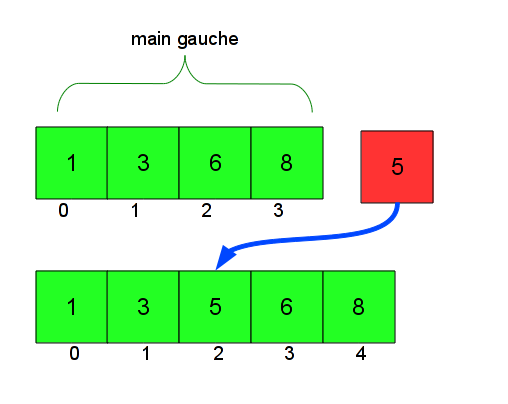
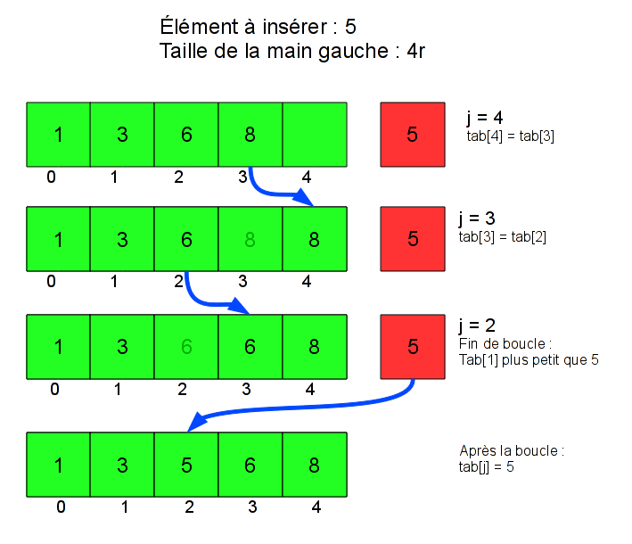
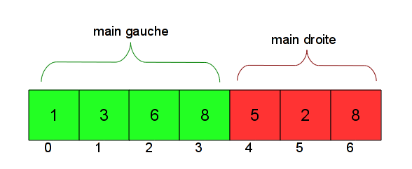
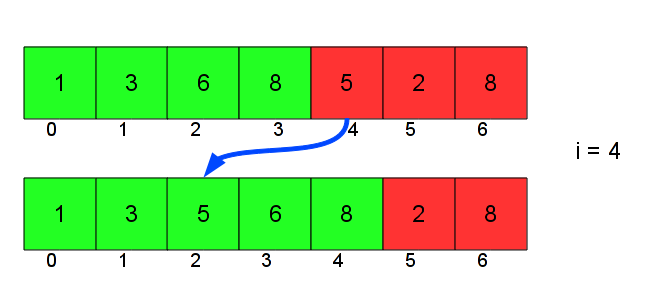

Le tri par insertion est le tri le plus connu. C'est celui que les gens utilisent intuitivement quand ils doivent trier une liste d'objets, par exemple quand on joue aux cartes.
L'algorithme principal du tri par insertion est un algorithme qui insère un élément dans une liste d'éléments déjà triés (par exemple, par ordre croissant).
Imaginez un joueur de cartes qui dispose de cartes numérotées. Il a des cartes triées de la plus petite à la plus grande dans sa main gauche, et une carte dans la main droite. Où placer cette carte dans la main gauche de façon à ce qu'elle reste triée ? Il faut la placer après les cartes plus petites, et avant les cartes plus grandes.
Par exemple, si la main gauche est (1 3 6 8), et que j'ai la carte 5 dans la main droite, il faut la placer après (1 3) et avant (6 8). Si l'on fait ça, on se retrouve avec la main gauche (1 3 5 6 8), qui est encore triée.
Pour trier entièrement un ensemble de cartes dans le désordre, il suffit alors de placer toutes ses cartes dans la main droite (la main gauche est donc vide), et d'insérer les cartes une à une dans la main gauche, en suivant la procédure ci-dessus.
Au départ, la main gauche est vide, donc elle bien triée. À chaque fois que l'on insère une carte depuis la main droite vers la main gauche, la main gauche reste triée, et la main droite (l'ensemble des cartes non triées) perd une carte. Ainsi, si la main droite comprenait au départ N cartes, en N insertions, on se retrouve avec O carte dans la main droite, et N cartes, triées, dans la main gauche : on a bien trié notre ensemble de cartes.
Commençons tout d’abord par l’opération d’insertion d’une carte de la main droite vers la main gauche. On veut placer la carte après toutes les cartes plus petites, et avant toutes les cartes plus grandes.
En reprenant notre exemple de tout à l'heure, pour insérer l'élément 5 dans la main (1 3 6 8), voici ce qu'on veut faire :

Pour faire cela avec un tableau, on a du décaler certaines cartes : 6 était en position 2 avant l'insertion, elle est en position 3 après. De même, la carte 8 a été décalée. Plus généralement, il faut décaler d’une case vers la droite toutes les cartes plus grandes que la carte à insérer.
Pour faire cela, une bonne méthode est de commencer par la droite : on décale la carte la plus à droite (8), puis celle juste à gauche (6), jusqu'au moment où on tombe sur une carte plus petite que celle qu'on veut insérer, qu'il ne faut pas décaler. Une fois qu'on a fait ces décalages, on peut insérer la carte, à la position à laquelle on s'est arrêté de décaler.
Voici le code :
void inserer(int element_a_inserer, int tab[], int taille_gauche)
{
int j;
for (j = taille_gauche; j > 0 && tab[j-1] > element_a_inserer; j--)
tab[j] = tab[j-1];
tab[j] = element_a_inserer;
}
On part de la fin de la main gauche, donc de taille_gauche, et on descend (j--) tant que les cartes sont plus grandes que la carte à insérer. Le test j > 0 vérifie qu’on ne sort pas du tableau, ce qui pourrait arriver si toutes les cartes sont plus grandes que l’élément à insérer.
La boucle s’arrête quand la carte tab[j-1] devient plus petite que l’élément à insérer. On insère alors cet élément juste après la case j-1, donc en j.
Une illustration pour mieux comprendre :

Il y a une remarque importante à faire : taille_gauche est la taille de la main gauche, mais ce n’est pas la taille du tableau tab : comme on rajoute un élément, on a besoin que le tableau tab ait au moins une case de plus. Sur le dessin, ça correspond à la présence d'une case verte supplémentaire, vide, au début de l'insertion. On suppose donc que la taille réelle de tab est toujours strictement supérieure à taille_gauche, et c’est pour cela qu’on s’autorise à écrire dans tab[taille_gauche] (au premier tour de boucle, quand j vaut taille_gauche). Quand on utilisera la fonction inserer, on vérifiera que la taille du tableau convient.
Tri complet
Il est maintenant très simple de coder le tri complet.
void tri_insertion(int tab[], int taille)
{
int i;
for(i = 1; i < taille; ++i)
inserer(tab[i], tab, i);
}
Je parcours le tableau avec l’indice i.
L’idée, c’est que je considère que toutes les cartes avant i sont triées, et que toutes les cartes après i ne sont pas triées, tab[i] compris. i est donc la limite entre la main gauche et la main droite. Autrement dit, j'ai bien mes deux mains (heureusement !), mais ce ne sont pas deux mains séparées, elles sont ensembles dans un seul tableau : la main gauche est le début du tableau, qui est déjà trié, et la main droite le reste du tableau.
Jusqu'à présent, dans l'implémentation, je n'ai pas parlé de la main droite : on insérait seulement un élément. Cet élément est la première carte de la main droite. Par exemple, l'insertion que je vous ai montrée au départ faisait en fait partie du tri du tableau suivant, quand i vaut 4 :

Comme i est la limite entre la main droite et la main gauche, la carte d’indice i appartient avant l’insertion à la main droite, et après à la main gauche. Au début de la boucle, [0...i-1] est la main gauche, puis on insère tab[i] avec la fonction vue au-dessus, donc la main gauche devient [0..i], et reste triée.
Illustration :

En faisant varier i de 1 à taille-1 (i < taille est la condition d’arrêt), on insère donc peu à peu toutes les cartes dans la main gauche. On remarque que la boucle commence à 1, et non à 0. La première carte, comme elle est toute seule, est déjà une liste triée, donc on peut l’inclure d’office dans la main gauche.
Vous remarquerez que la taille donnée à la fonction inserer est i. Ainsi, comme la plus grande valeur de i possible est taille-1, la plus grande taille donnée à insérer est taille-1 aussi. J’avais dit qu’on ferait attention à ce que la taille donnée pour la main gauche soit toujours inférieure à la véritable taille du tableau, et vous pouvez maintenant le vérifier.
Voici une "version longue" (mais il n’y a pas de DVD bonus ;) ) du code, qui réunit les deux fonctions en une seule, et un petit exemple d’utilisation :
#include <stdio.h>
void tri_insertion(int tab[], int taille)
{
int i, j;
for (i = 1; i < taille; ++i) {
int elem = tab[i];
for (j = i; j > 0 && tab[j-1] > elem; j--)
tab[j] = tab[j-1];
tab[j] = elem;
}
}
int main(void)
{
int i;
int tableau[10] = {9, 8, 6, 7, 5, 2, 4, 1, 3, 0};
printf("avant le tri : ");
for(i = 0; i < 10; i++) printf("%d ", tableau[i]);
printf("\n");
tri_insertion(tableau, 10);
printf("apres le tri : ");
for(i = 0; i < 10; i++) printf("%d ", tableau[i]);
printf("\n");
return 0;
}
Remarque : écrire un tel code semble simple, mais il y a en fait plusieurs façons différentes de voir les choses qui donnent lieu à des codes très différents les uns des autres, et pas toujours aussi efficaces. J'ai toujours pris soin d'avoir un code simple à présenter et expliquer, mais une version précédente de ce tutoriel utilisait pour cela une implémentation nettement moins efficace en pratique (trois recopies pour chaque élément décalé dans la fonction d'insertion, au lieu d'une). La version actuelle est née des remarques de candide, et permet de combiner efficacité et simplicité, quand on donne les explications adaptées.
Comment peut-on évaluer la rapidité de cet algorithme ? On pourrait mesurer son temps d'exécution sur mon ordinateur, mais cela n'est pas fiable parce que si on change d'ordinateur, le temps d'exécution change aussi : il peut être très rapide chez mon voisin (qui a un super PC) et très lent chez moi. Une mesure plus rigoureuse de la "rapidité" de l'algorithme serait de mesurer le "nombre d'opérations" qu'il effectue : que ce soit chez moi ou chez mon voisin, pour trier le même tableau, il va effectuer le même nombre d'opérations, mais pas à la même vitesse. L'avantage de ce critère est qu'il permet de comparer efficacement les algorithmes entre eux, indépendamment de l'ordinateur qui les exécute : si un algorithme fait plus d'opérations que le mien, il sera plus lent et chez moi, et chez mon voisin ; même si le nouvel algorithme est plus rapide chez mon voisin que l'algorithme actuel chez moi, je saurais qu'il est moins bon.
Il reste à définir ce qu'est une "opération". Plutôt que d'essayer de capturer absolument tous les détails du code (quand on incrémente une variable, quand on fait un test, etc.), on choisit une définition plus abstraite : on va dire que mon algorithme effectue une opération à chaque fois qu'il compare deux cartes entre elles. C'est un choix assez pertinent, car la comparaison des cartes est le coeur de mon algorithme de tri. En particulier, si les éléments que l'on trie sont longs à comparer entre eux (ce qui est assez souvent le cas, quand on ne trie pas seulement des entiers, mais des structures plus complexes), ce sont effectivement les comparaisons qui prendront le plus de temps, et non pas les incrémentations de variables dans les boucles for, par exemple.
Il s'agit donc de calculer le nombre de comparaisons totales effectuées par le programme.
Supposons que N est la taille du tableau à trier. Je fais ici une approche globale et un calcul exact. Si les maths vous ennuient, lisez juste l'approche.
Approche
Si N est la taille de l'entrée, le contenu de la première boucle est exécuté (l'ordinateur fait ce qui est dedans) environ N fois (plus précisément, N-1 fois). À chaque fois qu'on exécute cette première boucle, on exécute la deuxième boucle entre 0 et i fois : on part de la case i, et on va jusqu'à la case 0, en s'arrêtant avant si on trouve une carte plus petite que l'élément à insérer. On a donc un nombre de comparaisons variant entre 0 et i, donc entre 0 et N. Le nombre total d'exécutions de la deuxième est donc plus grand que N * 0, et plus petit que N * N, entre 0 et N².
On dit donc que le nombre de calculs de cet algorithme est de l'ordre de N² (dans le calcul détaillé, vous verrez que c'est plutôt N² / 2, mais que la différence n'a pas grand sens).
Calcul exact dans le pire cas
Une bonne façon de mesurer la complexité de l'algorithme est de compter le nombre de calculs effectués "dans le pire cas", c'est à dire dans la configuration qui donnera le plus de travail possible à l'algorithme. Si on connaît bien ce cas, on a une idée du temps maximal que peut prendre l'algorithme (et donc on sait que "c'est toujours mieux que ...", ce qui est assez rassurant).
Dans le pire cas, il faut décaler à chaque fois toutes les cartes de la main gauche, et pas seulement une partie d'entre elles. À chaque tour de boucle on a donc i comparaisons (la taille de la main gauche).
Le nombre total de comparaisons est donc 1 + 2 + 3 + 4 + 5...+ N-1 (la dernière valeur de i est N-1). Combien vaut ce nombre ? Appelons-le S. On a :
(J'ai renversé l'addition sur la deuxième ligne, ce qui ne change pas la valeur de S.)
En additionnant chaque somme des deux lignes "en colonnes", on additionne S + S, le résultat est 2S :
S = 1 + 2 + 3 + 4 + 5 + ... + N-5 + N-4 + N-3 + N-2 + N-1
S = N-1 + N-2 + N-3 + N-4 + N-5 +.... + 5 + 4 + 3 + 2 + 1
2S = N + N + N + N + N + N + N + N + N + N + N
On voit que 2S, c'est N ajouté à lui-même N-1 fois (de 1 à N-1, il y a N-1 termes). On a donc 2S = N(N-1) ou S = N(N-1)/2.
Quand N est très grand, N(N-1) est approximativement égal à N², et le nombre de comparaisons de l'algorithme est donc d'environ N²/2, ou N²*0.5 comparaisons.
Cependant, le facteur 0.5 n'a pas grand sens : sur un ordinateur deux fois plus rapide, on ira deux fois plus vite et sur un ordinateur 2 fois plus lent, deux fois moins vite. Pour estimer le temps mis par cet algorithme de manière indépendante de l'ordinateur, on dit donc que le nombre d'actions qu'il fait est "de l'ordre de N²".
Conclusion
En langage "scientifique", on dira que la complexité du tri par insertion est de O(N²).
En pratique, cela signifie que si l'on double la taille du tableau, l'algorithme sera 4 fois plus lent, et si on la multiplie par 10, 100 fois plus lent.
Approximation pratique
En une seconde, sur un processeur à 1 Ghz, en supposant qu'une comparaison (et les remplacements ou non qui l'accompagnent) prend 100 cycles de processeur (après une comparaison, je fais des manips de variables, etc. cela prend plusieurs cycles ; 100 est une valeur crédible), en une seconde, on accomplit 109 cycles, soit 10 millions de comparaisons. La taille du tableau qui met une seconde à être trié sur un ordinateur à 1 Ghz est donc environ 3 000. (3000 * 3000 est proche de 10 millions.)
Aller un peu plus loin
J'ai dit que le pire cas possible était celui où chaque insertion décalait toutes les cartes de la main gauche. À quel genre de tableau en entrée cela correspond-il ? Si on doit décaler toutes les cartes, c'est que la carte qu'on veut insérer est plus petite que toutes les cartes de la main gauche : à chaque fois, la carte suivante est plus petite que toutes les autres. Cela correspond en fait à un tableau trié en ordre décroissant (du plus grand au plus petit), et donc exactement l'inverse que ce qu'on veut.
Il paraît assez naturel que le pire cauchemar d'une fonction de tri en ordre croissant soit une entrée triée dans l'autre sens, mais en réalité ce n'est pas le pire cas de toutes les fonctions de tris, il y en a qui s'en sortent très bien.
Remarque
Il est possible de coder tri-insertion avec des listes chaînées (si vous ne savez pas ce que c'est, sautez ce paragraphe) au lieu de tableaux. L'avantage, c'est que c'est très simple d'insérer un élément au milieu d'une liste chaînée : il n'y a pas besoin de décaler toutes les valeurs suivantes. L'algorithme est donc considérablement simplifié (mais la complexité ne change pas). Cependant, en C, on ne dispose pas de listes chaînées par défaut, j'utilise donc les tableaux à la place.
Ce tutoriel est mis à disposition sous licence creative commons . Ça signifie que vous pouvez librement copier et modifier ce tutoriel, à condition de citer l'auteur original et de conserver cette licence.